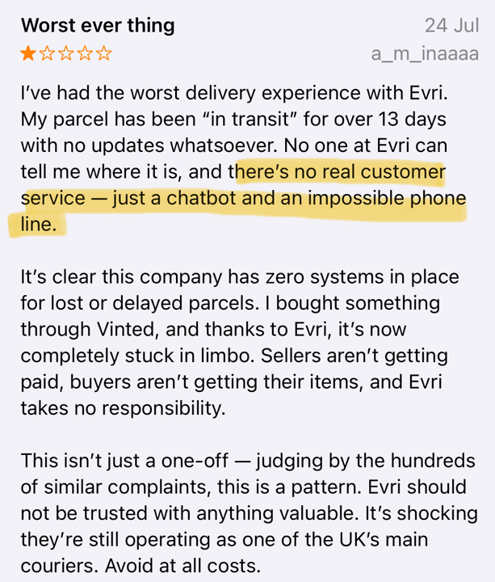
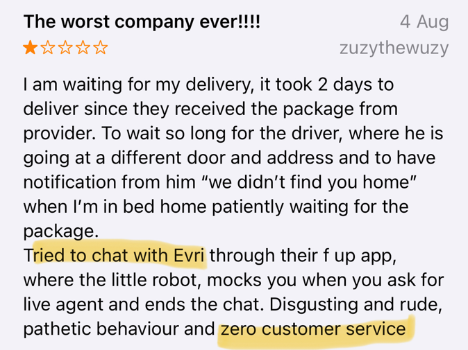
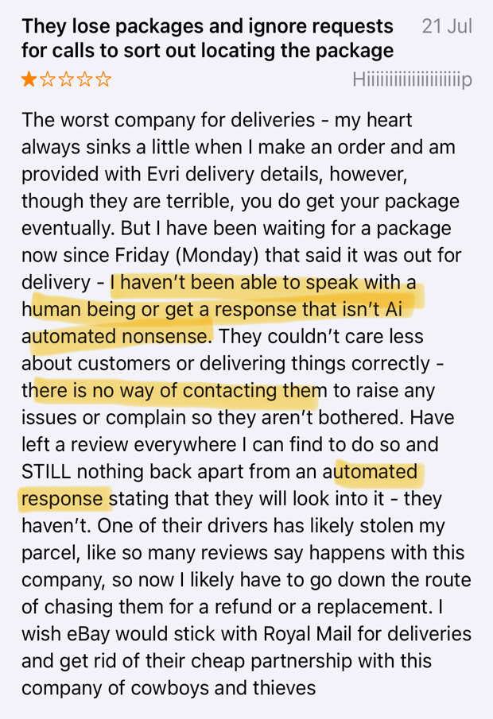
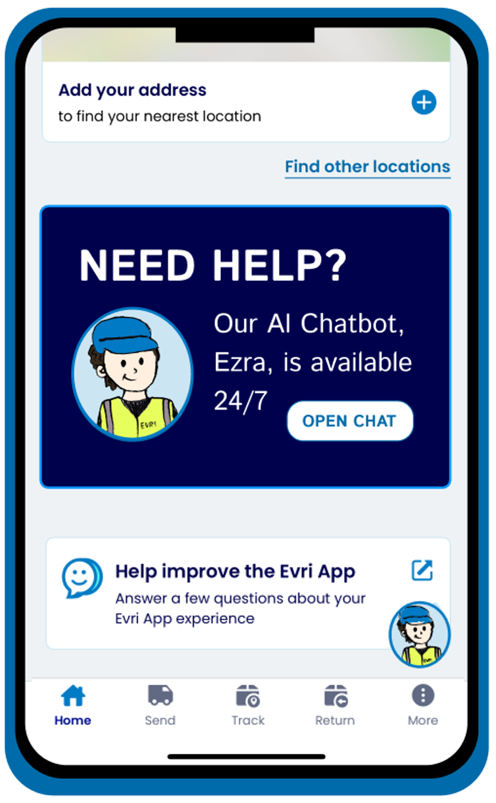
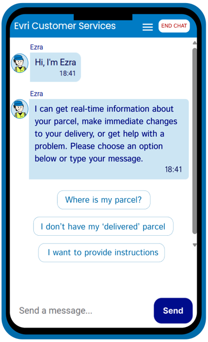
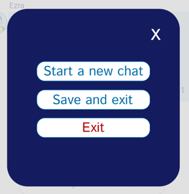
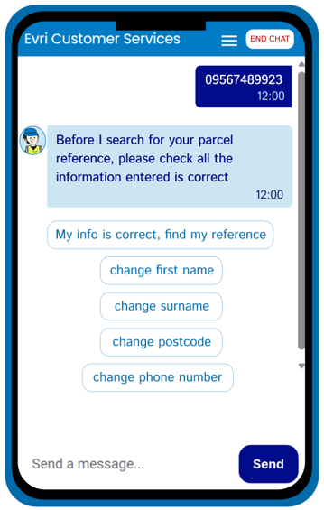
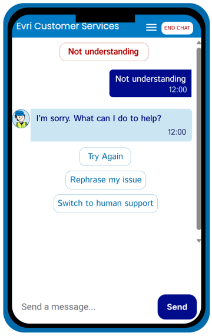
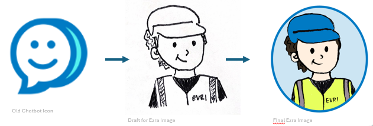

-----------------------------------
EVRI recieves many negative reviews revealing a common theme of issues with EVRI’s chatbot and/or their customer service in general. This project evaluated the usability of the EVRI customer service chatbot including ways to improve the user experience through trust, efficiency and emotional connection.
Customer reviews and industry reports show user frustrations with EVRI’s customer support. Many users rely on the chatbot service for issues with deliveries, but a lack of understanding was leading to hightened frustration revealing low usability and task completion.



Key Concerns:
I created a user persona and user journey...
I conducted usability testing with each participant completing the same three tasks:
The participants were encouraged to 'Think Aloud' while completing the tasks to reveal further usability issues.
The chatbot was further evaluated using the BUS-15 Chatbot Usability Scale
Testing revealed three major issues:
Improvement 1 - Clear entry point

Improvement 2 - Improving clarity of 'End chat' button


Improvement 3 - Implementing error handling


Improvement 4 - Humanised chatbot
I created a new visual identity for Ezra to facilitate a more 'human-like' connection and promote an empathetic reaction

These changes aim to:
Limitations